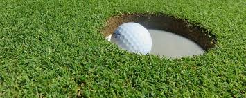

You chose to take a conservative stroke to ensure the two putt for par. Just as promised, you do two putt for par and walk off the first hole with some confidence!
 Image from: http://www.spmvacations.com/things-to-do-in-outer-banks-in-winter/golf-ball-in-hole-header/